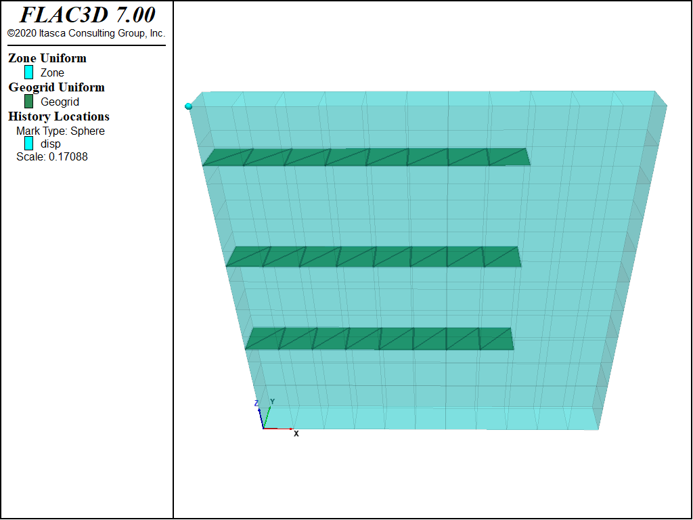
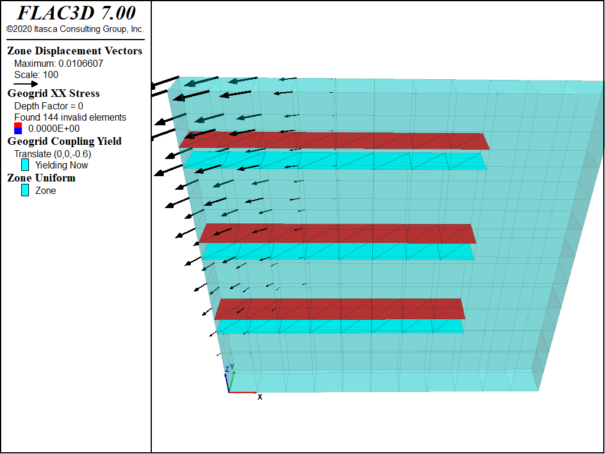
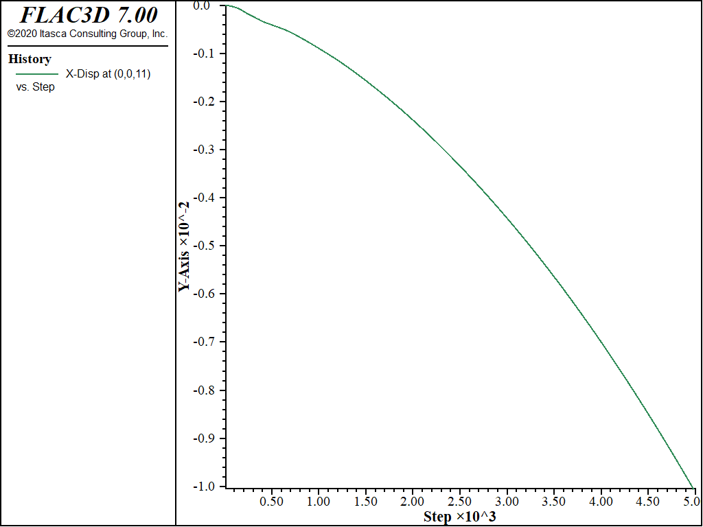
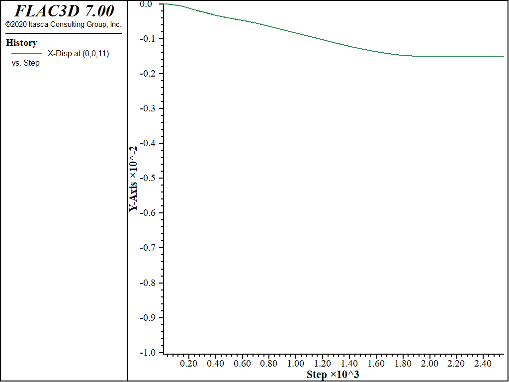
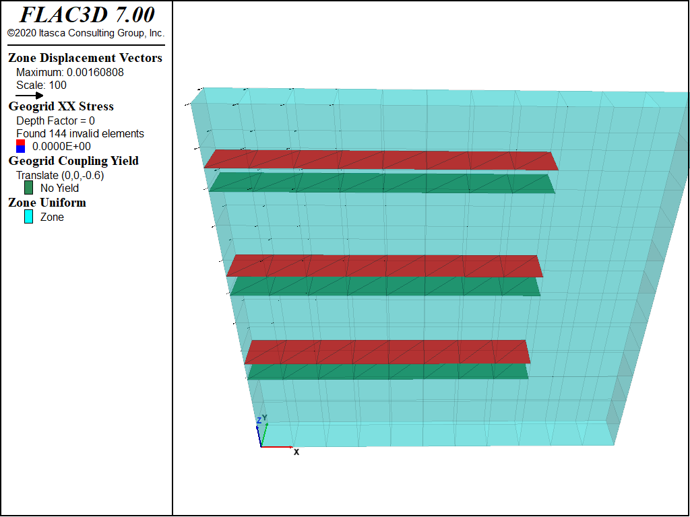
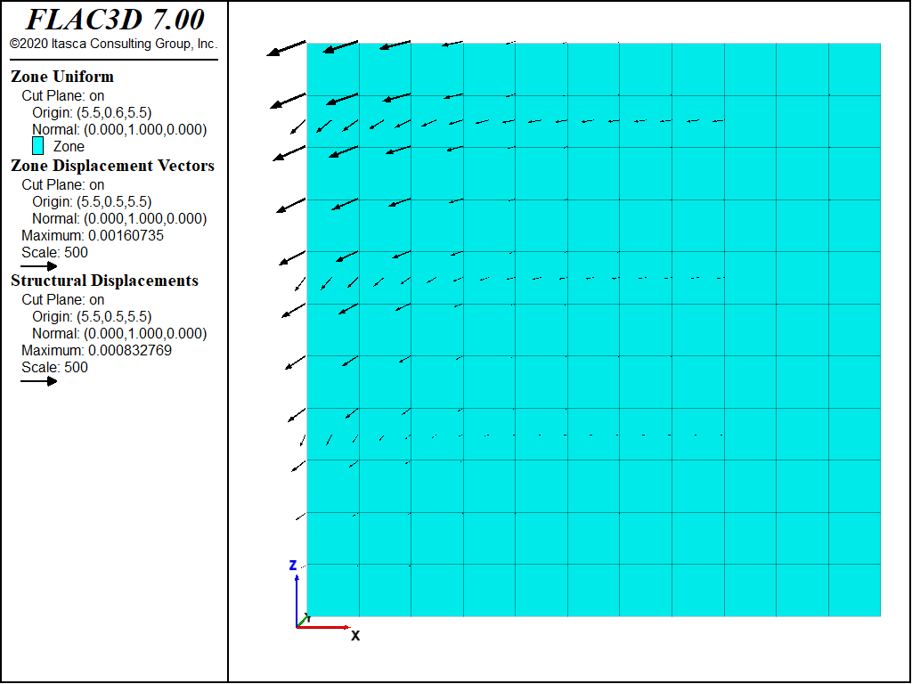

土工格栅加筋路堤
问题描述
注意
要在 FLAC3D 中查看此项目，请使用菜单命令 。选择“Structure/Geogrid/ReinforcedEmbankment”，然后选择“RinforcedEmbankment.f3prj”进行加载。所使用的主数据文件（main data files）显示在本示例末尾。其余数据文件可在项目中找到。
本示例说明了用三层土工格栅加筋的土质路堤的行为。它类似于土钉支护（Soil Nailing）示例，其中使用锚索加筋路堤。在竖直路堤的不同高度安装三层土工格栅。假定土工格栅与土体之间无黏聚力阻力。确定了使路堤稳定所需的土工格栅-土体界面摩擦角。
FLAC3D 模型由 48 个土工格栅单元和 121 个网格单元组成，如图 1（Figure 1） 所示。模型模拟在平面应变条件（无面外运动）下宽 1 m 的土体剖面。在实际路堤施工中，土体本应逐层添加，每层土工格栅铺设后再用土覆盖。此处则简化为：将三层土工格栅直接铺设在无应力的土体中，然后施加与土重相对应的土体原位应力。在此阶段，每层土工格栅承受随深度增大的不同围压。随后通过移除模型左侧的约束来形成路堤，并循环计算直至重新建立平衡或明显看出路堤正在失稳。


图 1：土工格栅加筋路堤的 FLAC3D 模型。
土体模拟为 Mohr-Coulomb 材料，并指定与土钉支护（Soil Nailing）中相同的性质。FLAC3D 中的土工格栅保持弹性；破坏可能发生在土工格栅-土体界面和/或土体网格单元中。土工格栅被指定与土工格栅拉拔试验（Geogrid Pull-out Test）中相同的性质（\(E\) = 26 GPa，\(\nu\) = 0.33，\(t\) = 5 mm，\(k\) = 2.3 N/m3，\(c\) = 0），并改变摩擦角。
当土工格栅-土体界面摩擦角为 0 度时，土工格栅的抗剪阻力无法调动，而土体本身也没有足够强度阻止路堤失稳。图 2（Figure 2） 表明土工格栅不承受荷载，且所有土工格栅节点均已达到滑移状态。左上网格点 \(x\) 方向位移的图（见图 3（Figure 3））表明路堤正在失稳。


图 2：土工格栅-土体界面摩擦角为零时土工格栅中的拉应力（路堤正在失稳）。


图 3：土工格栅-土体界面摩擦角为零时左上网格点的总 x 方向位移（路堤正在失稳）。
通过使土工格栅-土体界面具有 5° 的摩擦阻力，土工格栅足以使路堤保持稳定（见图 4（Figure 4））。图 5（Figure 5） 绘制了该情形下土工格栅中的拉应力。顶层土工格栅发生滑移并将荷载传递到下部各层。土体和土工格栅的位移场如图 6（Figure 6） 所示。图中可明显看出系统的逆时针转动以及拔出变形随深度减小。


图 4：土工格栅-土体界面摩擦角为 5° 时左上网格点的总 x 方向位移（路堤稳定）。


图 5：土工格栅-土体界面摩擦角为 5° 时土工格栅中的拉应力（路堤稳定）。


图 6：土工格栅-土体界面摩擦角为 5° 时土体和土工格栅中的位移场（路堤稳定）。
数据文件
ReinforcedEmbankment.dat
model new
model large-strain off
model title "Reinforced embankment (using geogrids)"
; 创建土体并指定参数
zone create brick size 11 1 11
zone face skin ; 标记网格单元边界
zone cmodel assign mohr-coulomb
zone property bulk 5e9 shear 1e9 cohesion 4e4 friction 30 density 2000
; 创建三层土工格栅，并指定参数
struct geogrid create by-quadrilateral (0,0,9.5) (8,0,9.5) ...
(8,1,9.5) (0,1,9.5) size (8,1)
struct geogrid create by-quadrilateral (0,0,6.5) (8,0,6.5) ...
(8,1,6.5) (0,1,6.5) size (8,1)
struct geogrid create by-quadrilateral (0,0,3.5) (8,0,3.5) ...
(8,1,3.5) (0,1,3.5) size (8,1)
struct geogrid property isotropic=(26e9, 0.33) thick=5e-3 ...
coupling-stiffness=2.3e6 coupling-cohesion=0.0 ...
coupling-friction=0 ; 耦合摩擦为 0！
; 指定边界条件
zone face apply velocity-normal 0 range group 'East' or 'West'
zone face apply velocity-normal 0 range group 'North' or 'South'
zone face apply velocity (0,0,0) range group 'Bottom'
; 初始条件
model gravity 10
zone initialize-stresses ratio 0.6,0.4
model solve convergence 1
; 历史
zone history name='disp' displacement-x position (0,0,11)
model save 'Initial'
; 工况 1 - 耦合摩擦 0
; 移除模型左侧的约束。
zone face apply-remove range group 'West'
; 求解，但 5000 步后停止，因为预期会破坏
model solve convergence 1 cycles 5000
model save 'Friction-0'
; 工况 2 - 耦合摩擦 5 度
model restore 'Initial'
struct geogrid property coupling-friction=5
model solve convergence 1
; 移除模型左侧的约束。
zone face apply-remove range group 'West'
; 求解
model solve convergence 1
model save 'Friction-5'
| 这些内容对您有帮助吗？… | FLAC3D © 2019, Itasca | 原文更新于 2020 年 10 月 8 日 |